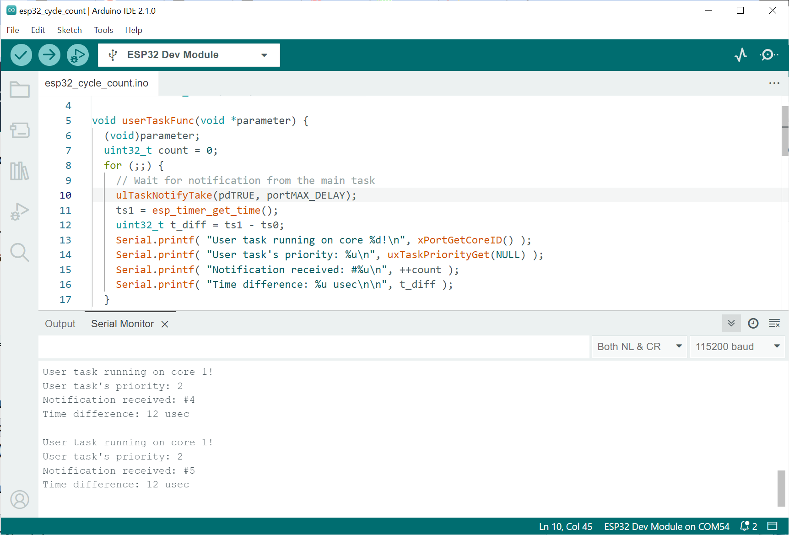

การทดสอบหาระยะเวลาในการทำคำสั่งสำหรับ Arduino ESP32#
Keywords: Arduino, ESP32, ESP32 Performance Measurement, Code Instrumentation
- การเขียนโปรแกรมด้วย Arduino ESP32 Core
- โค้ดตัวอย่างที่ 1
- โค้ดตัวอย่างที่ 2
- โค้ดตัวอย่างที่ 3
- โค้ดตัวอย่างที่ 4
- โค้ดตัวอย่างที่ 5
- โค้ดตัวอย่างที่ 6
▷ การเขียนโปรแกรมด้วย Arduino ESP32 Core#
บอร์ดไมโครคอนโทรลเลอร์อย่างเช่น ESP32 สามารถนำมาใช้และเขียนโปรแกรมได้โดยใช้คำสั่งของ Arduino API บทความนี้นำเสนอแนวทางการทดลองและตัวอย่างโค้ดเพื่อดูว่า การทำคำสั่งบางคำสั่งสำหรับไมโครคอนโทรลเลอร์ดังกล่าว จะใช้เวลาเท่าไหร่ การทดลองในลักษณะนี้เรียกว่า Code Instrumentation ซึ่งจะต้องมีการแทรกคำสั่ง เพื่อใช้ในการจับเวลา เช่น ก่อนเริ่มทำคำสั่งและหลังจากการทำคำสั่งแล้ว แล้วนำมาคำนวณเป็นระยะเวลาในการทำคำสั่งดังกล่าว การทำคำสั่งควรจะต้องทำหลายครั้งแล้วนำมาหาค่าเฉลี่ย
สำหรับการเขียนโค้ด ให้ติดตั้ง Arduino-ESP32 Core by Espressif Systems (v2.0.14 based on ESP-IDF v4.4.6) สำหรับ Arduino IDE v2.1.0 (หรือใหม่กว่า) แต่ถ้าเป็นเวอร์ชันใหม่ (ในขณะที่เขียนบทความนี้) ก็เป็นเวอร์ชัน Arduino ESP32 Core v3.0.0)
รูป: การติดตั้ง Arduino-ESP32 Core สำหรับ Arduino IDE v2.1.0 (Windows)
การอ่านค่าเวลาของระบบสำหรับ Arduino ESP32 ก็มีมากกว่าหนึ่งวิธี
- อ่านค่าเวลาที่เป็นตัวเลขจำนวนเต็ม มีหน่วยเป็นไมโครวินาที
- อ่านค่าตัวเลขจำนวนเต็มจากรีจิสเตอร์ตัวนับของซีพียูตามจำนวนไซเคิล (CPU Cycle Count)
การอ่านค่าเวลาของระบบ ก็สามารถใช้คำสั่ง micros() ของ Arduino API
ซึ่งจะได้ค่าเป็นตัวเลขจำนวนเต็ม มีหน่วยเวลาเป็นไมโครวินาที (usec)
หรือ คำสั่ง esp_timer_get_time() ที่ให้ค่าเป็นเลขจำนวนเต็มและมีหน่วยเป็นไมโครวินาที
(ใช้ชนิดข้อมูลเป็น uint64_t)
ถ้าจะอ่านค่าตัวนับไซเคิลของซีพียู ก็สามารถใช้คำสั่ง
esp_cpu_get_ccount() หรือ esp_cpu_get_cycle_count() ของ ESP-IDF
หรือคำสั่ง ESP.getCycleCount() ซึ่งเป็นส่วนหนึ่งของคลาส
ESP
แล้วจะนำมาแปลงเป็นค่าเวลาก็ได้ ซึ่งขึ้นอยู่กับความถี่ของซีพียู (เช่น 240MHz)
ถ้าจะใช้คำสั่งแบบ Inline Assembly เพื่ออ่านค่าจากรีจิสเตอร์ตัวนับไซเคิลของซีพียู ก็มีตัวอย่างดังนี้
uint32_t c0, c1;
// Read cycle count register.
asm volatile("rsr %0, ccount" : "=a"(c0));
_NOP(); // 1 CPU cycle
_NOP(); // 1 CPU cycle
_NOP(); // 1 CPU cycle
_NOP(); // 1 CPU cycle
// Read cycle count register.
asm volatile( "rsr %0, ccount" : "=a"(c1) );
// Compute cycle count difference.
uint32_t cyc_diff = (c1-c0-1);
Serial.printf( "Cycle difference: %u\n", cyc_diff );
// Convert cycle count difference to time duration in nanoseconds.
Serial.printf( "Time difference: %.3lf nsec\n",
((double)1000*cyc_diff)/ESP.getCpuFreqMHz() );
หรือใช้คำสั่งต่อไปนี้ก็ได้เช่นกัน (แต่ละซีพียูของ ESP32 มีตัวนับ CPU Cycle Count แยกกัน)
esp_cpu_get_ccount()ใช้กับ ESP-IDF v4.xesp_cpu_get_cycle_count()ใช้กับ ESP-IDF v5.x หรือ ใหม่กว่า
uint32_t c0, c1;
// Read cycle count register.
c0 = esp_cpu_get_ccount();
_NOP(); // 1 CPU cycle
_NOP(); // 1 CPU cycle
_NOP(); // 1 CPU cycle
_NOP(); // 1 CPU cycle
// Read cycle count register.
c1 = esp_cpu_get_ccount();
// Compute cycle count difference.
uint32_t cyc_diff = (c1-c0-1);
Serial.printf( "Cycle difference: %u\n", cyc_diff );
// Convert cycle count difference to time duration in nanoseconds.
Serial.printf( "Time difference: %.3lf nsec\n",
((double)1000*cyc_diff)/ESP.getCpuFreqMHz() );
การทำงานของโค้ดตัวอย่างนี้ จะได้ค่าเท่ากับ 4 ไซเคิล ซึ่งเท่ากับจำนวนครั้งที่มีการทำคำสั่ง NOP (No Operation) หรือคิดเป็น 4 Cycles @240MHz = 16.667 นาโนวินาที
▷ โค้ดตัวอย่างที่ 1#
โค้ดตัวอย่างแรกสาธิตการทดลอง เพื่อหาระยะเวลาในการทำคำสั่งของฟังก์ชัน
digitalWrite() ของ Arduino API
ที่ใช้เพื่อกำหนดค่าลอจิกให้ขา GPIO ที่เป็นเอาต์พุต
const int LED_PIN = 5; // GPIO-5
void setup() {
Serial.begin( 115200 );
pinMode( LED_PIN, OUTPUT );
}
void loop() {
uint32_t c0, c1;
asm volatile( "rsr %0, ccount" : "=a"(c0) );
digitalWrite( LED_PIN, HIGH ); // Output high to GPIO-5
digitalWrite( LED_PIN, LOW ); // Output low to GPIO-5
asm volatile( "rsr %0, ccount" : "=a"(c1) );
// Compute the cycle count difference.
uint32_t cyc_diff = (c1-c0-1);
Serial.printf( "Cycle difference : %lu\n", cyc_diff );
double t_usec = ((double)cyc_diff)/ESP.getCpuFreqMHz();
Serial.printf( "Time difference : %.3lf usec\n", t_usec );
Serial.printf( "digitalWrite() call : %.3lf usec\n\n", t_usec/2 );
// Wait for 5 seconds before repeating the loop.
delay(5000);
}
ในโค้ดตัวอย่างให้สังเกตว่า มีการเรียกใช้ฟังก์ชัน digitalWrite() สองครั้งถัดกัน (กำหนดค่าเอาต์พุตเป็น
HIGH และ LOW ตามลำดับ)
จากตัวอย่างข้อความเอาต์พุต จะเห็นได้ว่า การเรียกฟังก์ชัน digitalWrite() ต่อหนึ่งครั้ง จะใช้เวลาประมาณ
0.327 usec หรือ 327 นาโนวินาที
รูป: ตัวอย่างข้อความเอาต์พุตใน Arduino Serial Monitor
▷ โค้ดตัวอย่างที่ 2#
โค้ดตัวอย่างนี้สาธิตการจับเวลาที่ใช้ในการทำคำสั่ง for loop
โดยกำหนดให้ภายในลูปไม่มีคำสั่งใด ๆ ดังนั้นจึงเป็นการคำสั่งเพื่อเพิ่มค่าของตัวแปรที่ใช้เป็นตัวนับ
(ตั้งชื่อตัวแปรภายในเป็น i ที่มีชนิดข้อมูลเป็น counter_t)
ตัวนับจะเริ่มต้นจาก 0 และเพิ่มขึ้นครั้งละหนึ่งตามจำนวนรอบในการทำซ้ำ (NUM_ITERS)
และมีการตรวจสอบการทำซ้ำตามเงื่อนไขดังกล่าวในแต่ละรอบ ไม่มีการคำสั่งอื่นใด ๆ
ชนิดข้อมูล counter_t ได้ถูกกำหนดด้วยคำสั่ง typedef
ให้เป็น uint32_t (หรือ unsigned int)
ที่มีขนาด 32 บิต และสำหรับการเปรียบเทียบ ก็อาจเลือกใช้ float หรือ double
แทน uint32_t สำหรับตัวแปรที่ใช้เป็นตัวนับสำหรับ for loop
for (volatile counter_t i=0; i < NUM_ITERS; i++) {
// empty
}
ก่อนเริ่มต้นการทำงานของประโยคคำสั่ง for จะมีการปิดไม่ให้เกิดอินเทอร์รัพท์ในระบบด้วยคำสั่ง
portDISABLE_INTERRUPTS()
เพื่อไม่ให้ถูกขัดจังหวะในการทำงาน และเมื่อจบการทำงานแล้ว
จึงเปิดการทำงานของอินเทอร์รัพท์ในระบบตามปรกติด้วยคำสั่ง portENABLE_INTERRUPTS()
typedef uint32_t counter_t;
// typedef float counter_t;
// typedef double counter_t;
const int LED_PIN = 5;
const uint32_t NUM_ITERS = 100000UL;
#define SEP_LINE "=============================="
void setup() {
Serial.begin( 115200 );
Serial.flush();
delay( 100 );
Serial.println( "\n\n\n" );
pinMode( LED_PIN, OUTPUT );
digitalWrite( LED_PIN, LOW );
Serial.printf( "ESP-IDF %s\n", ESP.getSdkVersion() );
}
void loop() {
uint32_t t_start, t_exec, t_cycles;
// Save the start time (in usec).
t_start = micros();
// Save the current CPU cycle count.
t_cycles = ESP.getCycleCount();
// Output high to the LED pin.
digitalWrite( LED_PIN, HIGH );
// Disable interrupts.
portDISABLE_INTERRUPTS();
for (volatile counter_t i=0; i < NUM_ITERS; i++) {
// empty
}
// Enable interrupts.
portENABLE_INTERRUPTS();
// Output low to the LED pin.
digitalWrite( LED_PIN, LOW );
// Compute the CPU cycles executed.
t_cycles = ESP.getCycleCount() - t_cycles;
// Compute the execution time (in usec).
t_exec = micros() - t_start;
// Get the CPU frequency (in MHz).
uint32_t freq = ESP.getCpuFreqMHz();
// Show measurement results.
Serial.println( "\n\n" SEP_LINE SEP_LINE );
Serial.printf( "CPU Freq. [MHz] : %lu\n", freq );
Serial.printf( "Number of loops : %lu\n", NUM_ITERS );
Serial.printf( "Exec time [usec] : %lu\n", t_exec );
Serial.printf( "Exec time [usec] : %.4lf per loop\n",
((double)t_exec)/NUM_ITERS );
Serial.printf( "Exec time [cyc.] : %lu\n", t_cycles );
Serial.printf( "Exec time [cyc.] : %lu per loop\n",
t_cycles/NUM_ITERS );
Serial.printf( "Exec time [usec] : %.4lf per loop\n",
((double)(t_cycles/freq))/NUM_ITERS );
// Wait for 5 seconds before repeating the loop.
delay(5000);
}
จากการทดลอง ซึ่งดูได้จากตัวอย่างข้อความเอาต์พุตใน Arduino Serial Monitor จะเห็นได้ว่า
- การทำซ้ำด้วยประโยคคำสั่ง
forจำนวน 100,000 ครั้ง ใช้เวลาทั้งหมด 7933 usec (หรือ 7.933 msec) - หากดูจำนวนไซเคิลของซีพียูสำหรับการวนซ้ำ จะได้ 1,903,745 ไซเคิล (ซีพียูใช้ความถี่ 240MHz)
- หากหารเฉลี่ย จะได้ 0.0793 usec (79.3 nsec) ต่อหนึ่งรอบการทำซ้ำ ค่านี้จึงถือว่าเป็นส่วนที่เรียกว่า Loop Overhead (โดยประมาณ)
- ตัวแปรที่ใช้เป็นตัวนับ ถ้าเปลี่ยนจาก
uint32_tมาเป็นdoubleการทำซ้ำแต่ละรอบ จะใช้เวลามากขึ้น ใช้เวลา 0.4506 usec ต่อหนึ่งรอบการทำซ้ำ เพราะว่า การประมวลผลของซีพียูด้วย 32-bit Floating-Point Unit (FPU) จะใช้เวลามากกว่า 32-bit Integer Arithmetic
รูป: ตัวอย่างข้อความเอาต์พุตจากการทดลองด้วยบอร์ด ESP32 และเลือกใช้
uint32_t สำหรับชนิดข้อมูล customer_t

รูป: ตัวอย่างข้อความเอาต์พุต ในกรณีที่ได้เลือกใช้ double สำหรับชนิดข้อมูล customer_t
▷ โค้ดตัวอย่างที่ 3#
โค้ดตัวอย่างถัดไป มีการทำคำสั่งด้วยประโยคคำสั่ง for จำนวน
1,000,000 ครั้ง ซึ่งภายในประโยคคำสั่งดังกล่าว
จะมีการเรียกใช้คำสั่ง digitalWrite() สองครั้ง เพื่อกำหนดสถานะลอจิกของขา
GPIO ให้เป็น High และ Low ตามลำดับ
(เลือกใช้ขา GPIO-5 สำหรับเอาต์พุต อ้างอิงด้วยชื่อตัวแปร LED_PIN)
เนื่องจากมีการทำซ้ำที่ต้องใช้เวลานานและมีการปิดอินเทอร์รัพท์ของระบบในช่วงเวลาดังกล่าว
ในกรณีนี้ อาจทำให้ ESP32 Watchdog Timer (WDT) ทำงานและรีเซตการทำงานของระบบ
ดังนั้นจึงต้องมีการปิดการทำงานของ WDT ก่อนการทำซ้ำ ดังนั้นจึงมีการสร้างและเรียกใช้ฟังก์ชัน
disableWDT() ในโค้ดตัวอย่างนี้
#include "soc/timer_group_struct.h"
#include "soc/timer_group_reg.h"
typedef uint32_t counter_t;
const int LED_PIN = 5;
const uint32_t NUM_ITERS = 1000000UL;
#define SEP_LINE "=============================="
void disableWDT() {
// Disable the interrupt watchdog timer for timer groups: 1 and 0
#if ESP_ARDUINO_VERSION >= ESP_ARDUINO_VERSION_VAL(3, 0, 0)
TIMERG1.wdtwprotect.wdt_wkey = TIMG_WDT_WKEY_VALUE; // Unlock timer config
TIMERG1.wdtfeed.val = 1; // Reset feed count.
TIMERG1.wdtconfig0.wdt_en = 0; // Disable timer.
TIMERG1.wdtwprotect.wdt_wkey = 0; // Lock timer config.
TIMERG0.wdtwprotect.wdt_wkey = TIMG_WDT_WKEY_VALUE;
TIMERG0.wdtfeed.val = 1;
TIMERG0.wdtconfig0.wdt_en = 0;
TIMERG0.wdtwprotect.wdt_wkey = 0;
#else
TIMERG1.wdt_wprotect = TIMG_WDT_WKEY_VALUE; // Unlock timer config
TIMERG1.wdt_feed = 1; // Reset feed count.
TIMERG1.wdt_config0.en = 0; // Disable timer.
TIMERG1.wdt_wprotect = 0; // Lock timer config.
TIMERG0.wdt_wprotect = TIMG_WDT_WKEY_VALUE;
TIMERG0.wdt_feed = 1;
TIMERG0.wdt_config0.en = 0;
TIMERG0.wdt_wprotect = 0;
#endif
}
void setup() {
Serial.begin(115200);
Serial.flush();
delay(100);
Serial.println("\n\n\n");
pinMode( LED_PIN, OUTPUT );
digitalWrite( LED_PIN, LOW );
// Disable the Watchdog Timer.
disableWDT();
}
void loop() {
uint32_t t_start, t_exec, t_cycles;
t_start = micros();
t_cycles = ESP.getCycleCount();
portDISABLE_INTERRUPTS(); // Disable interrupts.
for (counter_t i=0; i < NUM_ITERS; i++){
digitalWrite( LED_PIN, HIGH ); // ~0.324usec
digitalWrite( LED_PIN, LOW );
}
portENABLE_INTERRUPTS(); // Re-enable interrupts.
t_exec = micros() - t_start;
t_cycles = ESP.getCycleCount() - t_cycles;
uint32_t freq = ESP.getCpuFreqMHz();
Serial.println( "\n\n" SEP_LINE SEP_LINE );
Serial.printf( "CPU Freq. [MHz] : %lu\n", freq );
Serial.printf( "Number of loops : %lu\n", NUM_ITERS );
Serial.printf( "Exec time [usec] : %lu\n", t_exec );
Serial.printf( "Exec time [usec] : %.4lf per loop\n",
((double)t_exec)/NUM_ITERS );
Serial.printf( "Exec time [cyc.] : %lu\n", t_cycles );
Serial.printf( "Exec time [cyc.] : %lu per loop\n",
t_cycles/NUM_ITERS );
Serial.printf("Exec time [usec] : %.4lf per loop\n",
((double)(t_cycles/freq))/NUM_ITERS );
// Wait for 5 seconds before repeating the loop.
delay(5000);
}
ตัวอย่างข้อความเอาต์พุตจากการทดลอง มีดังนี้
รูป: ตัวอย่างข้อความเอาต์พุต
รูป: การวัดสัญญาณที่ขาเอาต์พุตด้วยออสซิลโลสโคปดิจิทัล
จากการทดลองและวัดสัญญาณที่ขาเอาต์พุต โดยวัดความกว้างของพัลส์ จะเห็นได้ว่า
การทำคำสั่งของฟังก์ชัน digitalWrite() จะได้ประมาณ 324 นาโนวินาที
▷ โค้ดตัวอย่างที่ 4#
โค้ดตัวอย่างถัดไปเป็นการหาระยะเวลาในการทำคำสั่ง analogRead() ของ Arduino API
ซึ่งเป็นฟังก์ชันที่ใช้สำหรับการอ่านค่าแอนะล็อกอินพุต
#include "soc/timer_group_struct.h"
#include "soc/timer_group_reg.h"
typedef uint32_t counter_t;
// Note: value range for 32-bit unsigned int: 0 .. 4,294,967,295
const int LED_PIN = 5;
const uint32_t NUM_ITERS = 100000UL;
#define SEP_LINE "=============================="
void disableWDT() {
// Disable the interrupt watchdog timer for timer groups: 1 and 0
#if ESP_ARDUINO_VERSION >= ESP_ARDUINO_VERSION_VAL(3, 0, 0)
TIMERG1.wdtwprotect.wdt_wkey = TIMG_WDT_WKEY_VALUE; // Unlock timer config
TIMERG1.wdtfeed.val = 1; // Reset feed count.
TIMERG1.wdtconfig0.wdt_en = 0; // Disable timer.
TIMERG1.wdtwprotect.wdt_wkey = 0; // Lock timer config.
TIMERG0.wdtwprotect.wdt_wkey = TIMG_WDT_WKEY_VALUE;
TIMERG0.wdtfeed.val = 1;
TIMERG0.wdtconfig0.wdt_en = 0;
TIMERG0.wdtwprotect.wdt_wkey = 0;
#else
TIMERG1.wdt_wprotect = TIMG_WDT_WKEY_VALUE; // Unlock timer config
TIMERG1.wdt_feed = 1; // Reset feed count.
TIMERG1.wdt_config0.en = 0; // Disable timer.
TIMERG1.wdt_wprotect = 0; // Lock timer config.
TIMERG0.wdt_wprotect = TIMG_WDT_WKEY_VALUE;
TIMERG0.wdt_feed = 1;
TIMERG0.wdt_config0.en = 0;
TIMERG0.wdt_wprotect = 0;
#endif
}
void setup() {
Serial.begin(115200);
Serial.flush();
delay(100);
Serial.println("\n\n\n");
pinMode( LED_PIN, OUTPUT );
digitalWrite( LED_PIN, LOW );
disableWDT(); // Disable the Watchdog Timer.
}
void loop() {
uint32_t t_start, t_exec, t_cycles;
t_start = micros();
t_cycles = ESP.getCycleCount();
digitalWrite( LED_PIN, HIGH );
portDISABLE_INTERRUPTS(); // Disable interrupts.
for (counter_t i=0; i < NUM_ITERS; i++) {
(void)analogRead(A0); // Read analog input at A0 pin.
}
portENABLE_INTERRUPTS(); // Re-enable interrupts.
digitalWrite( LED_PIN, LOW );
t_exec = micros() - t_start;
t_cycles = ESP.getCycleCount() - t_cycles;
uint32_t freq = ESP.getCpuFreqMHz();
Serial.println( "\n\n" SEP_LINE SEP_LINE );
Serial.printf( "CPU Freq. [MHz] : %lu\n", freq );
Serial.printf( "Number of loops : %lu\n", NUM_ITERS );
Serial.printf( "Exec time [usec] : %lu\n", t_exec );
Serial.printf( "Exec time [usec] : %.4lf per loop\n",
((double)t_exec)/NUM_ITERS );
Serial.printf( "Exec time [cyc.] : %lu\n", t_cycles );
Serial.printf( "Exec time [cyc.] : %lu per loop\n",
t_cycles/NUM_ITERS );
Serial.printf( "Exec time [usec] : %.4lf per loop\n",
((double)clockCyclesToMicroseconds(t_cycles))/NUM_ITERS);
// Wait for 5 seconds before repeating the loop.
delay(5000);
}
จากตัวอย่างข้อความเอาต์พุต จะใช้เวลาในการคำสั่ง analogRead() ต่อหนึ่งครั้ง
ประมาณ 81.08 usec (รวม Loop Overhead ด้วย)
รูป: ตัวอย่างข้อความเอาต์พุต
ลองเปรียบเทียบกับรูปแบบการเขียนโค้ดอีกแนวทางหนึ่ง เพื่อหาระยะเวลาในการทำคำสั่ง
analogRead() ได้เช่นกัน
const uint32_t NUM_ITERS = 100000UL;
void setup() {
Serial.begin(115200);
Serial.flush();
delay(100);
Serial.println("\n\n\n");
// Set analog read resolution to 12 bits
analogReadResolution(12);
}
void loop() {
uint32_t c0, c1, cyc_diff;
cyc_diff = 0;
for (uint32_t i=0; i < NUM_ITERS; i++) {
portDISABLE_INTERRUPTS(); // Disable interrupts.
asm volatile("rsr %0, ccount" : "=a"(c0));
(void)analogRead(A0); // Read analog input at A0 pin.
asm volatile( "rsr %0, ccount" : "=a"(c1) );
portENABLE_INTERRUPTS(); // Re-enable interrupts.
cyc_diff += (c1-c0-1); // Accumulate the cycle count difference.
}
double t_usec;
cyc_diff /= NUM_ITERS; // Compute the average cycle count.
Serial.printf( "#Cycles per call : %lu\n", cyc_diff );
t_usec = ((double)cyc_diff)/ESP.getCpuFreqMHz();
Serial.printf( "analogRead() call : %.3lf usec\n\n", t_usec );
// Wait for 5 seconds before repeating the loop.
delay(5000);
}
จากข้อความเอาต์พุต แสดงให้เห็นว่า การเรียกฟังก์ชัน analogRead(...) ในแต่ละครั้ง
จะใช้เวลาประมาณ 80.88 usec (ค่าตัวเลขนี้ไม่ได้รวม Loop Overhead)

รูป: ตัวอย่างข้อความเอาต์พุต
▷ โค้ดตัวอย่างที่ 5#
โค้ดตัวอย่างนี้จะคล้ายกับโค้ดตัวอย่างที่ 4 แต่เปลี่ยนจากการหาระยะเวลาในการทำคำสั่ง analogRead(...)
มาเป็นคำสั่ง dacWrite(...) ซึ่งใช้สำหรับการสร้างสัญญาณแอนะล็อกเป็นเอาต์พุต
ชิป ESP32 SoC มีวงจร DAC จำนวน 2 ช่อง (DAC1 และ DAC2)
const uint32_t NUM_ITERS = 100000UL;
void setup() {
Serial.begin(115200);
Serial.flush();
delay(100);
Serial.println("\n\n\n");
// Set analog write resolution to 8 bits
//analogWriteResolution(DAC1, 8);
}
void loop() {
uint32_t c0, c1, cyc_diff;
cyc_diff = 0;
for (uint32_t i=0; i < NUM_ITERS; i++) {
portDISABLE_INTERRUPTS(); // Disable interrupts.
asm volatile("rsr %0, ccount" : "=a"(c0));
dacWrite( DAC1, 127 ); // Write DAC value to DAC1 channel.
asm volatile( "rsr %0, ccount" : "=a"(c1) );
portENABLE_INTERRUPTS(); // Re-enable interrupts.
cyc_diff += (c1-c0-1); // Accumulate the cycle count difference.
}
double t_usec;
cyc_diff /= NUM_ITERS; // Compute the average cycle count.
Serial.printf( "#Cycles per call : %lu\n", cyc_diff );
t_usec = ((double)cyc_diff)/ESP.getCpuFreqMHz();
Serial.printf( "dacWrite() call : %.3lf usec\n\n", t_usec );
// Wait for 5 seconds before repeating the loop.
delay(5000);
}
จากข้อความเอาต์พุต แสดงให้เห็นว่า การเรียกฟังก์ชัน dacWrite(...) ในแต่ละครั้ง
จะใช้เวลาประมาณ 17.883 usec (ค่าตัวเลขนี้ไม่ได้รวม Loop Overhead)
รูป: ตัวอย่างข้อความเอาต์พุต
▷ โค้ดตัวอย่างที่ 6#
โค้ดตัวอย่างถัดไปสาธิตการหาระยะเวลาในการสื่อสารกันระหว่างทาสก์ (Task) ของ FreeRTOS โดยมีทาสก์หนึ่งที่ถูกสร้างขึ้นมา (เรียกว่า User Task) และรอการสื่อสารด้วยวิธี Task Notification จากทาสก์หลัก (Main Task) ESP32 มีซีพียู 2 ชุด คือ CPU 0 และ CPU 1 ในตัวอย่างนี้ ทั้งสองทาสก์ทำงานโดยใช้ซีพียูตัวเดียวกัน คือ CPU 1
TaskHandle_t userTask;
volatile uint32_t c0, c1;
void userTaskFunc(void *parameter) {
(void)parameter;
uint32_t count = 0;
for (;;) {
// Wait for notification from the main task
ulTaskNotifyTake(pdTRUE, portMAX_DELAY);
asm volatile("rsr %0, ccount" : "=a"(c1));
uint32_t cyc_diff = c1-c0-1;
Serial.printf( "User task running on core %d!\n", xPortGetCoreID() );
Serial.printf( "User task's priority: %u\n", uxTaskPriorityGet(NULL) );
Serial.printf( "Notification received: #%lu\n", ++count );
Serial.printf( "Cycle difference: %lu\n", cyc_diff );
// Convert cycle count difference to time duration in nanoseconds.
Serial.printf( "Time difference: %.3lf usec\n\n",
((double)cyc_diff)/ESP.getCpuFreqMHz() );
}
}
void setup() {
Serial.begin(115200);
delay(1000);
// Create a new FreeRTOS task
xTaskCreate(
userTaskFunc, // Task entry function
"UserTask", // Task name
4096, // Stack size (in words)
NULL, // Task parameter
2, // Task priority (higher than the main task)
&userTask // Task handle
);
delay(1000);
Serial.println( "\n\nESP32-FreeRTOS Demo..." );
Serial.printf( "Main task's priority: %u\n", uxTaskPriorityGet(NULL) );
Serial.printf( "Main task running on core %d!\n", xPortGetCoreID() );
}
void loop() {
// Save the CPU cycle count.
asm volatile("rsr %0, ccount" : "=a"(c0));
// Send notification to the user task.
xTaskNotifyGive(userTask);
// Delay for 5 seconds
vTaskDelay( pdMS_TO_TICKS(5000) );
}
จากตัวอย่างข้อความเอาต์พุต จะเห็นได้ว่า เมื่อทาสก์หลักได้สื่อสารไปยังอีกทาสก์หนึ่งที่มีความคำสัญสูงกว่า
และทำงานโดยใช้ CPU Core เดียวกัน จะใช้เวลาประมาณ 12 usec ในแต่ละครั้ง
โดยเริ่มนับจากการทำคำสั่ง xTaskNotifyGive(...) ในฟังก์ชันการทำงานของทาสก์หลัก
ไปจนถึงเวลาที่อีกทาสก์หนึ่งได้ทำงานอีกครั้ง หลังจากที่รออยู่เนื่องจากได้ทำคำสั่ง ulTaskNotifyTake(...) เอาไว้
รูป: ตัวอย่างข้อความเอาต์พุต
การอ่านค่าจากรีจิสเตอร์ของตัวนับไซเคิล ซึ่งมี 2 ชุด แยกกันระหว่างซีพียู CPU 0 และ CPU 1
ดังนั้นถ้าให้ทาสก์ทั้งสองทำงานด้วยซีพียูต่างกัน (หรือซีพียูเดียวกันก็ได้) ก็แนะนำให้ใช้คำสั่ง esp_timer_get_time()
เพื่อใช้ในการจับเวลาด้วยวงจร Hardware Timer ของ ESP32
และมีตัวอย่างการเขียนโค้ดดังนี้
TaskHandle_t userTask;
volatile uint32_t ts0, ts1;
void userTaskFunc(void *parameter) {
(void)parameter;
uint32_t count = 0;
for (;;) {
// Wait for notification from the main task
ulTaskNotifyTake(pdTRUE, portMAX_DELAY);
ts1 = esp_timer_get_time();
uint32_t t_diff = ts1 - ts0;
Serial.printf( "User task running on core %d!\n", xPortGetCoreID() );
Serial.printf( "User task's priority: %u\n", uxTaskPriorityGet(NULL) );
Serial.printf( "Notification received: #%lu\n", ++count );
Serial.printf( "Time difference: %lu usec\n\n", t_diff );
}
}
void setup() {
Serial.begin(115200);
delay(1000);
// Create a new FreeRTOS task
xTaskCreatePinnedToCore(
userTaskFunc, // Taskentry function
"UserTAsk", // Task name
4096, // Stack size (in words)
NULL, // Task parameter
2, // Task priority (higher than the main task)
&userTask, // Task handle
1 // Core ID (either 0 or 1)
);
delay(1000);
Serial.println( "\n\nESP32-FreeRTOS Demo..." );
Serial.printf( "Main task's priority: %u\n", uxTaskPriorityGet(NULL) );
Serial.printf( "Main task running on core %d!\n", xPortGetCoreID() );
}
void loop() {
// Save the CPU cycle count.
ts0 = esp_timer_get_time();
// Send notification to the user task.
xTaskNotifyGive(userTask);
// Delay for 5 seconds
vTaskDelay( pdMS_TO_TICKS(5000) );
}

รูป: ตัวอย่างข้อความเอาต์พุต
หากทดลองเลือกใช้ CPU Core ให้ User Task ทำงานต่างซีพียูจาก Main Task ก็จะเห็นได้ว่า ระยะเวลาที่ต้องใช้ จะมากขึ้น (เช่น เพิ่มขึ้นจาก 12 ~ 15 usec เป็น ** 17 ~ 20 usec** โดยประมาณ)
▷ กล่าวสรุป#
บทความนี้ได้นำเสนอวิธีการและตัวอย่างการเขียนโค้ด Arduino
เพื่อหาระยะเวลาในการทำคำสั่งสำหรับชิป ESP32 ยกตัวอย่างเช่น การเรียกใช้ฟังก์ชัน
digitalWrite() analogRead() และ dacWrite() เป็นต้น
ซึ่งวิธีนี้จะช่วยให้นักพัฒนาสามารถนำไปใช้ เพื่อทำความเข้าใจและตรวจสอบการทำงานของโค้ด
การวิเคราะห์พฤติกรรมการทำงานในเชิงเวลาของฮาร์ดแวร์ได้ง่ายขึ้น
This work is licensed under a Creative Commons Attribution-ShareAlike 4.0 International License.
Created: 2023-10-06 | Last Updated: 2023-11-18